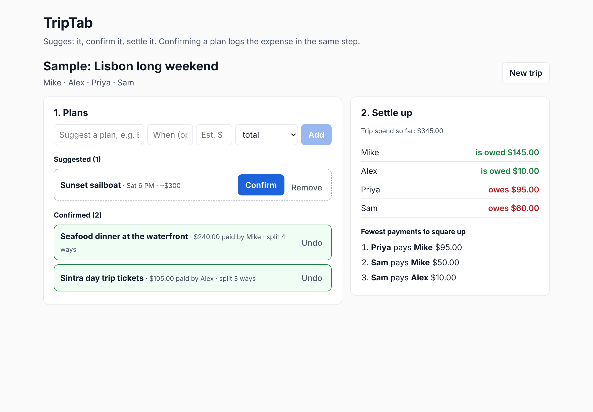

Product Showcase (Prototype / Live App / 2-Min Video)
Current Status: Build 1: rough local prototype (React + Vite, data in the browser's localStorage).
Demo: the sample trip after two plans were confirmed. Dinner was paid by one person for four; tickets were paid by another for three.

Run it: cd app, npm install, npm run dev, then click "Load sample trip". A cloud link and two-minute video come in Build 5.
Prior work: a spring 2026 TripTab prototype built in Lovable (mwp9437/triptab-RETIRED), made before this course (about 20 hours). This repo is a fresh rebuild; its settle-up math was adapted from that version.
Living PRD (Product Requirements Document)
PRD v1 · November 8, 2026. Updated every week as we test with real users and learn what works.
1. Target User & The Job to Be Done
Problem: On group trips, plans live in the group chat and money lives in Venmo requests. Nobody knows which plans are locked, who paid, or who owes whom until someone builds a spreadsheet after the trip.
Who is this for? My friends planning a Euro ski trip (about Feb 15 to 16, 2027). I'm on the trip. Lodging deposits, flights and lift passes get paid and split over the next few weeks, so the group can use TripTab before the trip as well as during it.
The painful "Before" workflow: Plans get agreed in the chat. One person fronts the dinner or the tickets. After the trip, someone scrolls back through the chat and re-enters every cost, who joined and who paid into Splitwise or a sheet, and the group argues about what's missing.
The "After" workflow with this product: Ideas go in as Suggested. When a plan happens, one tap confirms it with the real cost, who paid and who joined, and that logs the expense. The settle-up screen always shows the fewest payments that square everyone.
2. Scope & Explicit Non-Goals
- In Scope (Core Workflow): 1. Create a trip and invite friends, who join with an account. 2. Add plans as Suggested. 3. Confirm a plan: cost (total or per person), who paid, who joined; it becomes an evenly split expense. 4. Open Settle up: balances and the fewest payments.
- Out of Scope #1: AI itinerary generation (the spring version's starting point; the job here is managing the trip, not planning it).
- Out of Scope #2: Bookings or in-app payments. TripTab says who pays whom; Venmo moves the money.
- Out of Scope #3: A native iOS or Android app. TripTab is a phone-friendly web app.
3. How It Works Under the Hood & Riskiest Assumption (Week 2+)
Riskiest Assumption: Friends will tap Confirm in the moment, so the log is complete without anyone rebuilding it after the trip.
Simple Architecture: [Traveler in the browser] → [React app] → [localStorage] → [Balances + fewest payments]. No server and no AI model in Build 1. Next: accounts and a shared database, since everyone on the trip joins and adds plans and expenses.
How I'll know it works: My test group logs a real outing and agrees the settle-up matches what they're owed. From Build 2, PostHog tracks plans confirmed, expenses logged at confirm time, and settle-up views.
4. Unit Economics & Analytics Snapshot (Updated Weekly)
Cumulative Build Spend
$0 marginal (Claude Max, $100/mo, shared with other work)
Est. Cost Per User Run
$0 (runs in the browser; no API calls)
User Evidence (Analytics from Build 2)
Not yet measured
Sponsor Call (Week 6)
Made in Week 6, in the Sponsor Memo (Dec 14)
Open question: can TripTab find a way to make money that offsets the cost of its AI API calls?
Weekly Build Log
Build on at least two separate days each week outside class, including the November 3 break. Push commits and log actual progress, failures, PRD changes, costs, and hours here. All build deadlines are noon, New York time.
Build 1 · Intent.md & Throwaway Prototype (Due Nov 9)
- What shipped: PRD v1 and a local prototype of the core workflow: suggest plans, confirm one with cost, payer and who joined, and see balances plus the fewest payments to settle. Eight unit tests cover the split and settle-up math (
npm test).
- Things learned with AI: from the Terminus terminal game.
- Seeing with the terminal:
ls and cat let me see what's in a folder and in a file. Before, it always felt like I was running blind, mainly copy-pasting commands from Claude.
> vs >> is critical: > overwrites a file and >> adds to the end of it. A single missed key in the terminal can be super dangerous.- Tab completion: when files have similar names, type the first letter and press Tab to complete up to where the names differ, then type the next letter or two and press Tab again.
- What broke / changed in PRD: Accounts moved into scope: friends join a trip and add their own plans and expenses (the prototype still adds travelers by name). Narrowed the spring version (AI itinerary generator, chat, packing lists, budgets) to one job: confirm → settle. Money is now stored in whole cents so $100 split three ways is exactly $33.34 + $33.33 + $33.33. The settle-up column was squeezed by the plan form at desktop widths; fixed the grid.
- Cost & time this week: Agent: Claude, on a Claude Max plan ($100/month), so $0 extra for this build · about 5 hours
Build 2 · Smallest Local Version & PostHog (Due Nov 16)
- What shipped: [Local working slice, PostHog verified on this page and the local app, PRD v2, and local setup in AGENTS.md]
- What broke / changed in PRD: [Fill in]
- Cost & time this week: $[0.00] · [0] hours
Build 3 · Build.exe: The Core Workflow (Due Nov 23)
- What shipped: [End-to-end workflow working with real inputs + PostHog funnel events]
- What broke / changed in PRD: [Fill in]
- Cost & time this week: $[0.00] · [0] hours
Build 4 · Test.py: Choose Track A or Track B (Due Nov 30)
- Chosen track: [A: 10-case domain eval and one outside target-user review; OR B: 3–5 outside users and replay findings]
- Results and improvements: [Before/after evidence; for Track B, fixes to the top three friction points]
- PRD v4 changes: [What the evidence changed]
- Cost & time this week: $[0.00] · [0] hours
Build 5 · Ship.installer: Launch Ops, Rollback Check & 2-Min Video (Due Dec 7)
- Launch Ops & Safety: [Verified no exposed keys, set spend cap, tested 2-minute rollback]
- 2-Minute Video & Final Polish: [Link/embed above]
- Cost & time this week: $[0.00] · [0] hours